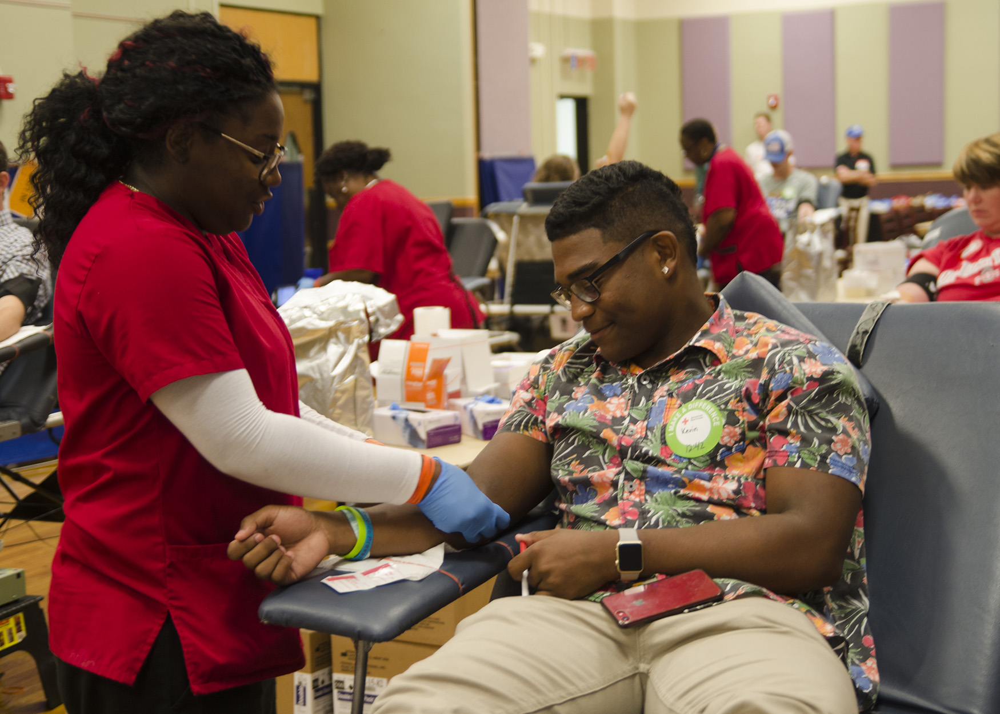
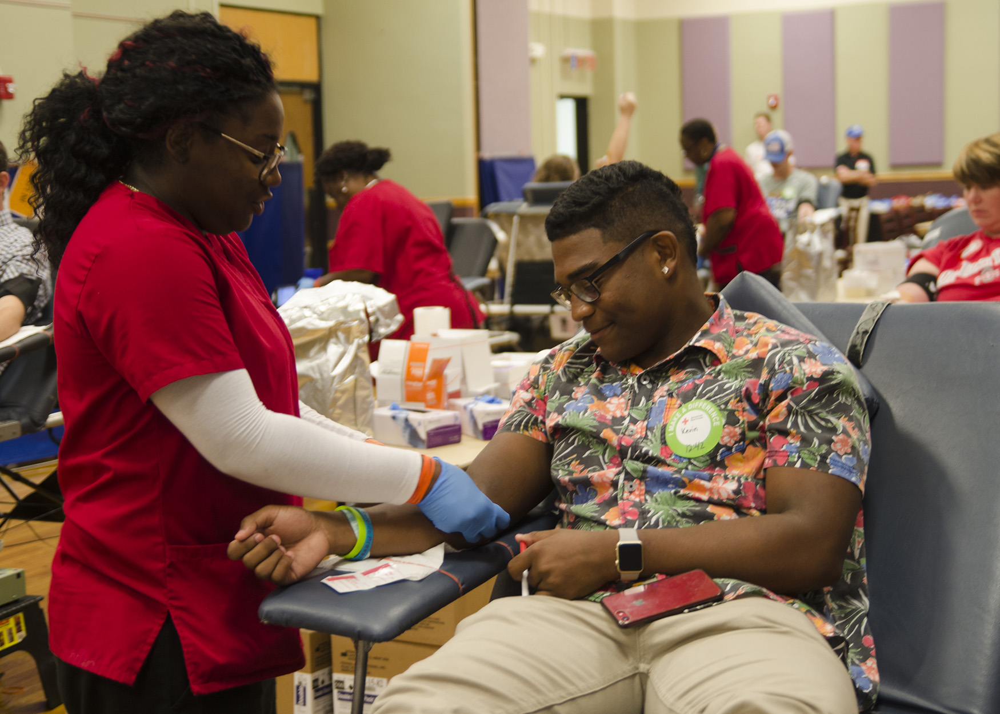
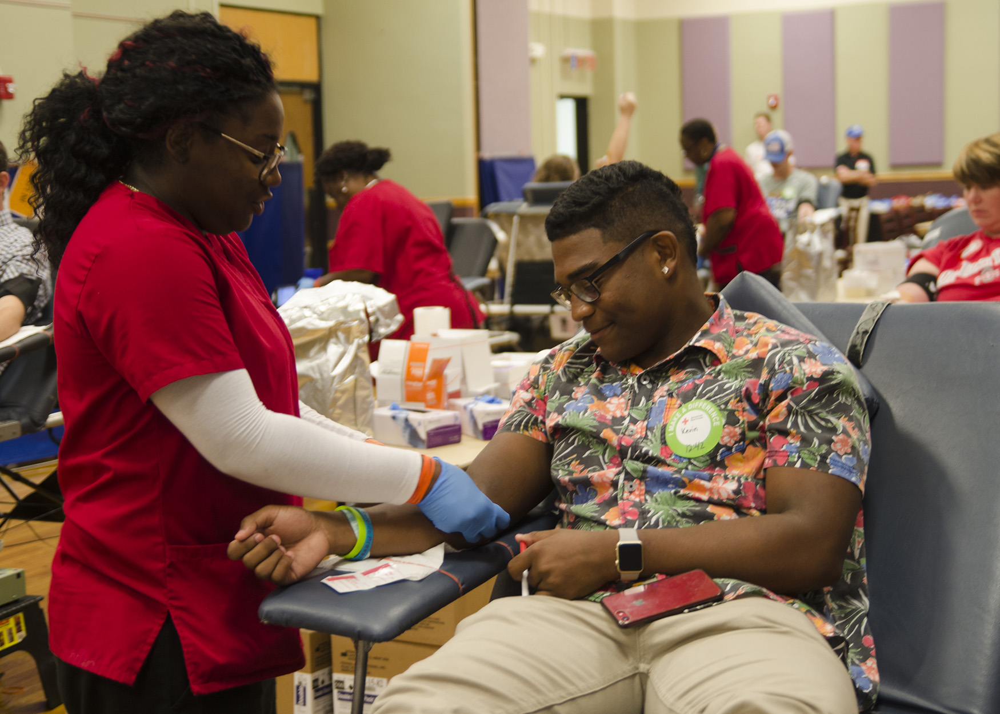

Kaitlyn Sanchez
I am a highly motivated and versatile liberal studies major with a passion for interdisciplinary learning and a strong commitment to community service. I am currently trying to achieve a Bachelor of Arts degree from the University of California Riverside, and have completed rigorous classes that included coursework in Biology, Calculus, Computer Science, Public Policy, and Economics. I am skilled in research and analysis, with experience using both qualitative and quantitative methods. I am also a strong communicator, with experience presenting to both academic and non-academic audiences. I am also fluent in Spanish, and have goals to study abroad to further develop my knowledge of Hispanic culture. I am a first generation college student from a low class household of an immigrant father that works two jobs. My childhood has been driven by the desire of achieving more than what my father had the opportunity of ever doing. I have somehow managed to be the other parent figure for my four younger siblings. I have gained skills of caregiving for younger ages as well as older ages for I took care of my father after two surgeries. I have always been driven to accomplish whatever I must do, even if it means waking up every morning before sunrise and walking forty-five minutes to a bus stop. Throughout high school, I have demonstrated a strong academic record, earning 4.0 GPA and being the top twenty-five students in my graduating class of 2022, and was actively involved in key club, as well as, a literature and reading club. I have also gained valuable experience with tutoring a variety of students from the ages of high school and down in all subjects necessary, where I have developed skills in collaborating, being a leader, and being in a student-centric environment. In addition to being one of the top ranked students in my high school years, I have also demonstrated a strong commitment to community service. I have volunteered for libraries, cleaning my community, and helping out at animal shelters, where I have gained valuable experience in implementing responsibility and organization. I have been passionate about using these skills and knowledge to make a positive impact on my community, and am dedicated to continuing my work in assisting students with any necessary subjects that they might be struggling with. In being a teacher assistant, I have continued to build upon my skills and knowledge, and have demonstrated my skills during my time in being a teacher aid for my previous high school I once attended. I am known for my serious work ethic and respect for authority and is respected by my colleagues. I am committed to staying up-to-date with the latest developments in the education field, and am constantly seeking out new opportunities to expand my knowledge and expertise. In the future, I plan to continue my work in the education field, with a focus on wanting to be an English teacher. I am excited about the opportunities ahead, and am committed to using my skills and knowledge to make a positive impact on my community. I am a dedicated and hardworking individual with a strong sense of purpose, and am poised to achieve great things in my future career.
Experience
Key Club
• organized events
• cleaned waste off of environment
• Experience in group settings
Cashier
• Responsible for checking out customers
• experience with communicating to customers
Teaching Assistant
• ran tutoring groups to help with any subject
• Reviewed and graded students papers for AVID classes
• Created slideshows to help organize AVID students
• helped tutor 7 classes throughout the year
Education
UC Riverside
Portfolio
 


